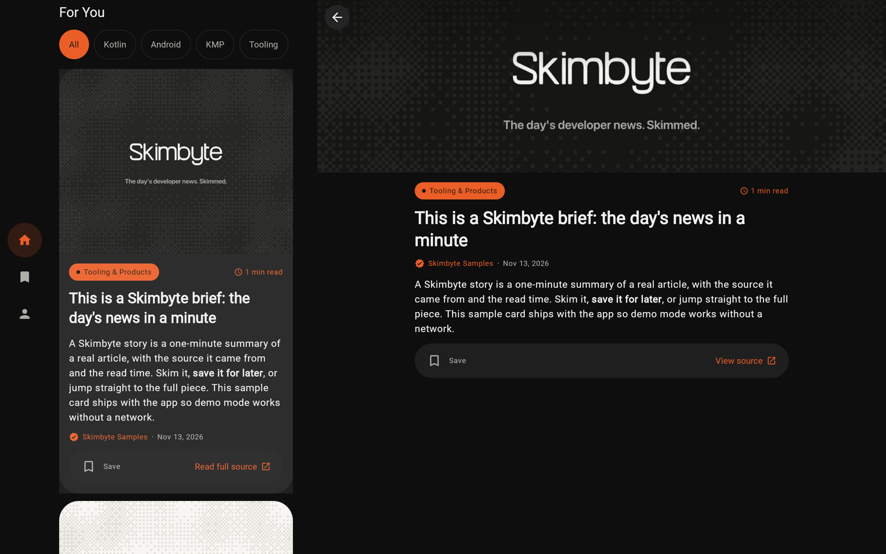
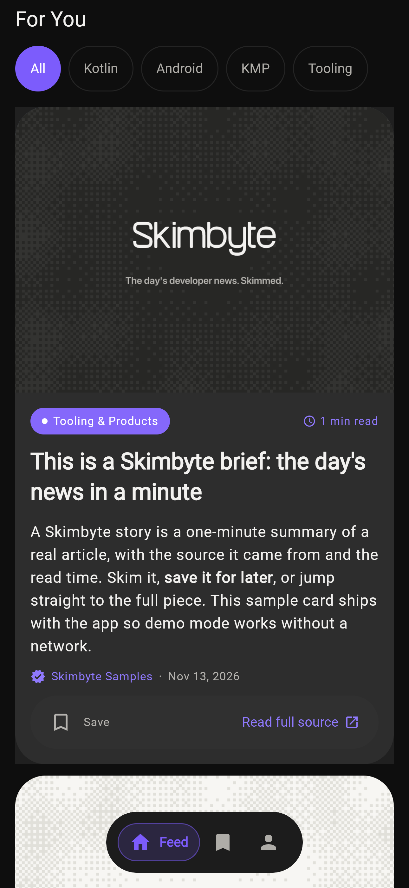
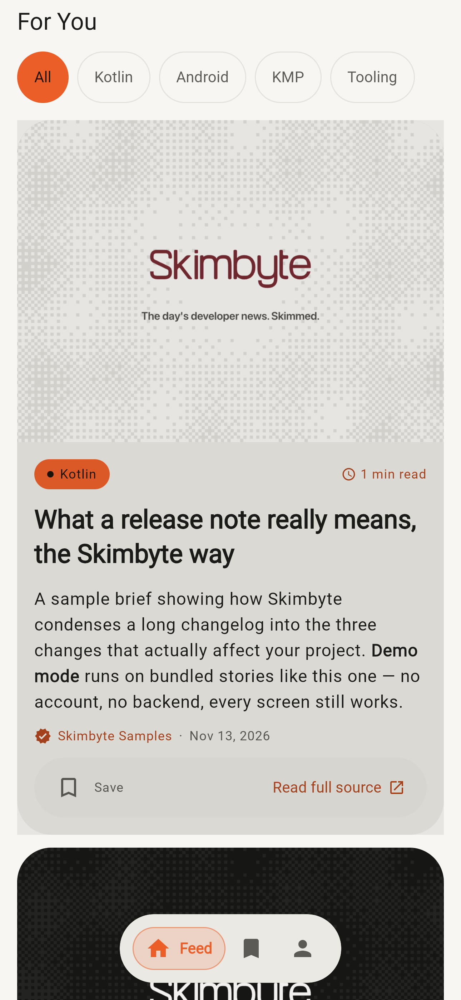
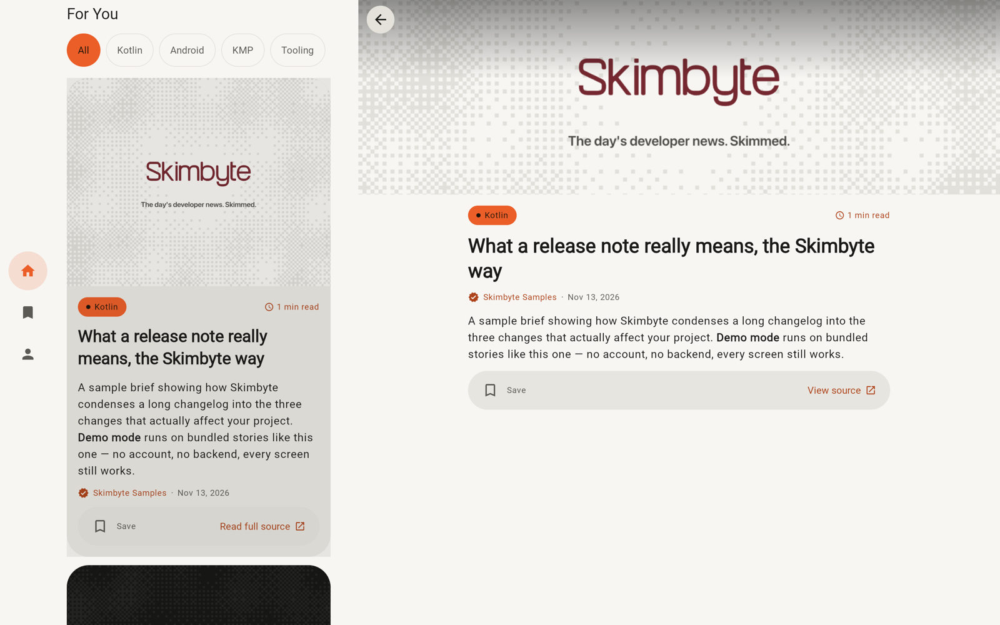

Skimbyte reads the mobile-dev firehose — Kotlin, Swift, Flutter, React Native, Android, AI, tooling, even XR — and turns it into a once-a-day brief you can finish with your coffee. Pick your topics, skim the cards, bookmark what's worth keeping. No ads. No tracking.



Skimbyte is a single Kotlin Multiplatform + Compose Multiplatform codebase. The same UI and logic compile natively for phones, desktops, and the browser — not five rewrites. What you see on your phone is, line for line, what runs on your Mac.

Matte black or off-white, and one sharp colour of your choosing. These are the app's actual appearance settings: flip the theme, pick an accent, and watch the whole page follow.
Accent: Flame, one of ten, straight from
AccentColor.kt
Desktop builds are packaged and published by GitHub Actions on every release. Nothing hand-built, nothing hidden.
The Windows installer is not yet code-signed; SmartScreen will ask for
confirmation before installing. Prefer building it yourself? A fresh clone runs end to end on
bundled sample data: ./gradlew :desktopApp:run
Skimbyte doubles as a production-shaped reference for Kotlin Multiplatform — real architecture, a three-layer test suite, adaptive layouts, and a living design system you can browse without cloning anything.
Architecture, testing strategy, and the full API reference.
Read the docsWritten to be read. The docs explain why the code is shaped the way it is, not just what it does.
The app's component catalog, live in your browser via Kotlin/Wasm.
Open the catalogEvery component, every token. The design system runs as a real Compose app, compiled to WebAssembly.
Apache-2.0. Clone it, run every target, learn from it, contribute.
Browse the sourceNo private pieces in the app. A fresh clone runs on bundled sample data, no backend required.